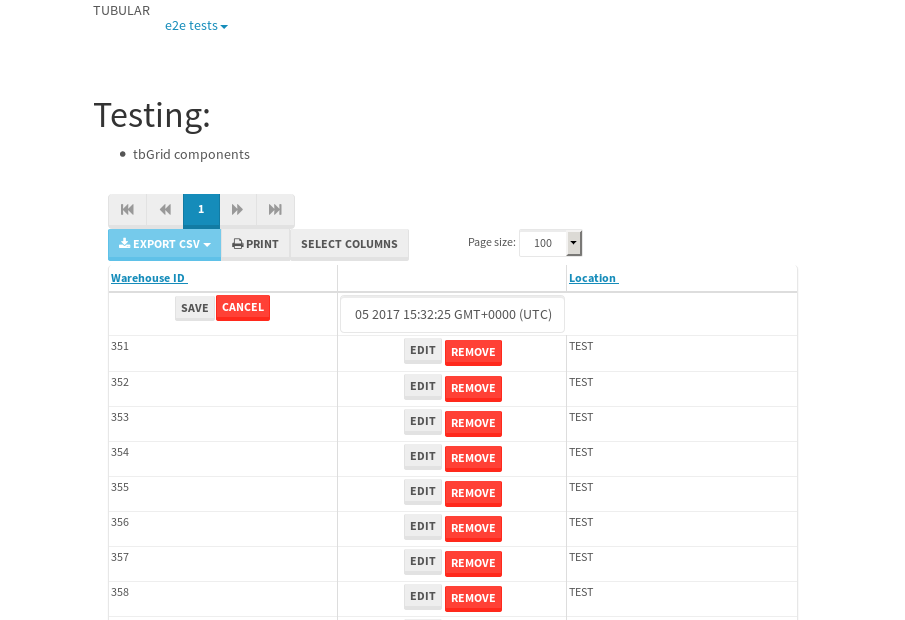
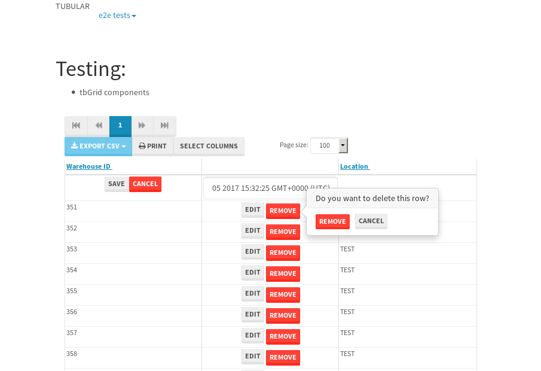
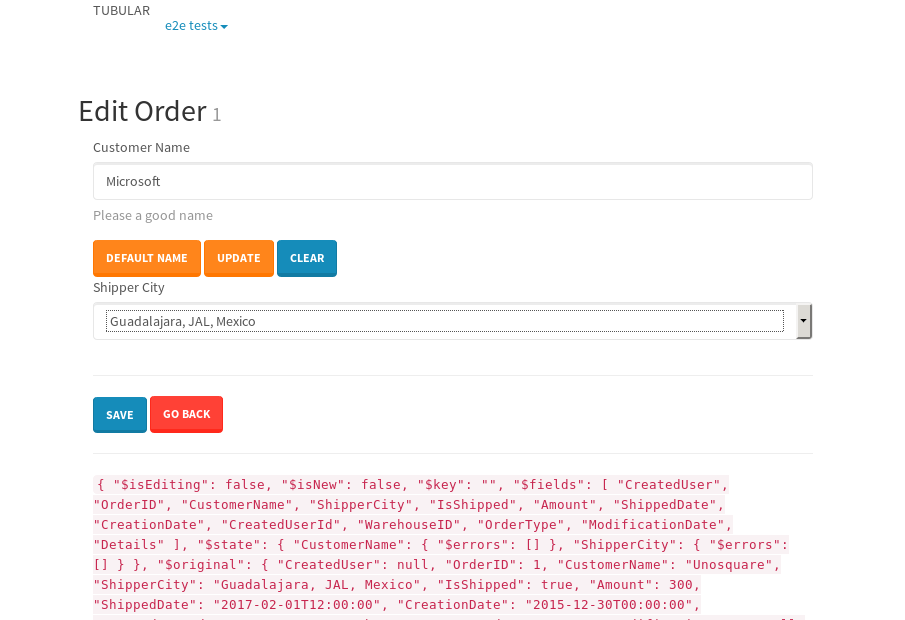

tbColumn.Grid Sorting - 184.731sTests: 5Skipped: 0Failures: 3 should sort data in ascending order then on descending order when sorting by Order Id column - 45.533sExpected '1' to be '500'.✗Expected '20' to be '481'.✗Tests passed: 50.00%should order data in ascending order when click-sorting an unsorted text column - 24.857sTests passed: 100.00%should order data in descending order when click-sorting an ascending-sorted text column - 44.933sExpected 'Advanced Technology Systems' to be 'Vesta'.✗Tests passed: 0.00%should order data in ascending order when click-sorting an unsorted date column - 24.787sTests passed: 100.00%should order data in descending order when click-sorting twice an unsorted date column - 44.612sExpected '12/30/2015' to match /1\/01\/2016/.✗Tests passed: 0.00%
tbEmptyForm - 5.85sTests: 3Skipped: 0Failures: 0 should have an empty required field - 2.138sTests passed: 100.00%should not be able to click on save - 0.023sTests passed: 100.00%should load default value for numeric field - 0.027sTests passed: 100.00%
Tubular Filters.tbColumnFilter - 96.449sTests: 12Skipped: 0Failures: 0 should cancel filtering when clicking outside filter-popover - 7.587sTests passed: 100.00%should disable Value text-input for "None" filter - 5.675sTests passed: 100.00%should disable apply button for "None" filter - 5.747sTests passed: 100.00%should decorate popover button when showing data is being filtered for its column - 11.275sTests passed: 100.00%should correctly filter data for the "Equals" filtering option - 7.35sTests passed: 100.00%should correctly filter data for the "Not Equals" filtering option - 7.734sTests passed: 100.00%should correctly filter data for the "Contains" filtering option - 7.187sTests passed: 100.00%should correctly filter data for the "Not Contains" filtering option - 7.236sTests passed: 100.00%should correctly filter data for the "Starts With" filtering option - 6.328sTests passed: 100.00%should correctly filter data for the "Not Starts With" filtering option - 6.303sTests passed: 100.00%should correctly filter data for the "Ends With" filtering option - 6.3sTests passed: 100.00%should correctly filter data for the "Not Ends With" filtering option - 6.351sTests passed: 100.00%
Tubular Filters.tbColumnDateTimeFilter - 123.656sTests: 12Skipped: 0Failures: 0 should cancel filtering when clicking outside filter-popover - 6.17sTests passed: 100.00%should disable Value text-input for "None" filter - 5.514sTests passed: 100.00%should disable apply button for "None" filter - 5.76sTests passed: 100.00%should clear filtering when clicking on Clean button - 16.61sTests passed: 100.00%should decorate popover button when showing data is being filtered for its column - 11.016sTests passed: 100.00%should correctly filter data for the "Equals" filtering option - 6.225sTests passed: 100.00%should correctly filter data for the "Not Equals" filtering option - 6.433sTests passed: 100.00%should correctly filter data for the "Between" filtering option - 11.139sTests passed: 100.00%should correctly filter data for the "Greater-or-equal" filtering option - 11.011sTests passed: 100.00%should correctly filter data for the "Greater" filtering option - 11.001sTests passed: 100.00%should correctly filter data for the "Less-or-equal" filtering option - 10.771sTests passed: 100.00%should correctly filter data for the "Less" filtering option - 10.857sTests passed: 100.00%
Tubular Filters.tbColumnOptionsFilter - 77.934sTests: 3Skipped: 0Failures: 0 should cancel filtering when clicking outside filter-popover - 7.285sTests passed: 100.00%should decorate popover button when showing data is being filtered for its column - 10.812sTests passed: 100.00%should filter column-elements in accordance to the selected filter when selecting a single option - 48.227sTests passed: 100.00%
Tubular Filters.tbTextSearch - 43.795sTests: 5Skipped: 0Failures: 0 min-chars is not set - 0.087sTests passed: 100.00%should filter data in searchable-column customer name to matching inputted text, starting from 3 characters - 5.857sTests passed: 100.00%should filter data in searchable-column shipper city to matching inputted text, starting from 3 characters - 11.012sTests passed: 100.00%should show clear button when there is inputted text only - 5.645sTests passed: 100.00%should clear filtering when clicking clear button - 15.505sTests passed: 100.00%
tbForm related components.tbCheckboxField - 20.812sTests: 2Skipped: 0Failures: 1 should save changes on "SAVE" - 18.151sExpected 51 to be -1.✗Tests passed: 50.00%should discard changes on "CANCEL" - 0.914sTests passed: 100.00%
tbForm related components.tbDropDownEditor - 21.98sTests: 5Skipped: 0Failures: 0 should set initial input value to the value of "value" attribute when defined - 0.829sTests passed: 100.00%should show the component name value in a label field when "showLabel" attribute is true - 0.803sTests passed: 100.00%should show a help field equal to this attribute, is present - 0.789sTests passed: 100.00%should submit modifications to item/server when clicking form "Save" - 17.931sTests passed: 100.00%should NOT submit modifications to item/server when clicking form "Cancel" - 1.07sTests passed: 100.00%
tbForm related components.tbTextArea - 24.525sTests: 7Skipped: 0Failures: 0 should set initial input value to the value of "value" attribute when defined - 0.81sTests passed: 100.00%should be invalidated when the number of chars is not in the range of "min" and "max" attributes - 1.151sTests passed: 100.00%should show the component name value in a label field when "showLabel" attribute is true - 0.733sTests passed: 100.00%should show a help field equal to this attribute, is present - 0.731sTests passed: 100.00%should require the field when the attribute "required" is true - 0.873sTests passed: 100.00%should submit modifications to item/server when clicking form "Save" - 18.253sTests passed: 100.00%should NOT submit modifications to item/server when clicking form "Cancel" - 1.275sTests passed: 100.00%
tbForm related components.tbDateEditor - 22.83sTests: 6Skipped: 0Failures: 0 should set initial date value to the value of "value" attribute when defined - 0.773sTests passed: 100.00%should be invalidated when the date is not in the range of "min" and "max" attributes - 1.192sTests passed: 100.00%should show the component name value in a label field when "showLabel" attribute is true - 0.691sTests passed: 100.00%should show a help field equal to this attribute, is present - 0.601sTests passed: 100.00%should submit modifications to item/server when clicking form "Save" - 17.778sTests passed: 100.00%should NOT submit modifications to item/server when clicking form "Cancel" - 0.999sTests passed: 100.00%
tbForm related components.tbTypeaheadEditor - 145.71sTests: 7Skipped: 0Failures: 6 should show an options list when there is an API-info/component entered-data - 17.961sFailed: Element must be user-editable in order to clear it.✗Tests passed: 0.00%should select the option clicked - 18.704sFailed: Element must be user-editable in order to clear it.✗Tests passed: 0.00%should show a "delete" button when an option/match is selected, and delete the option if button is clicked - 18.134sFailed: Element must be user-editable in order to clear it.✗Tests passed: 0.00%should show a label value equal to the component name when "showLabel" attribute is true - 18.112sTests passed: 100.00%should require a value when "require" attribute is true - 18.106sFailed: Element must be user-editable in order to clear it.✗Tests passed: 0.00%should submit modifications to item/server when clicking form "Save" - 18.324sFailed: Element must be user-editable in order to clear it.✗Tests passed: 0.00%should NOT submit modifications to item/server when clicking form "Cancel" - 18.351sFailed: Element must be user-editable in order to clear it.✗Tests passed: 0.00%
tbForm related components.tbSimpleEditor - 25.352sTests: 9Skipped: 0Failures: 0 should set initial input value to the value of "value" attribute when defined - 0.738sTests passed: 100.00%should be invalidated when the number of chars is not in the range of "min" and "max" attributes - 1.165sTests passed: 100.00%should show the component name value in a label field when "showLabel" attribute is true - 0.721sTests passed: 100.00%should set input placeholder to the value of "placeholder" attribute - 0.9sTests passed: 100.00%should validate the control using the "regex" attribute, if present - 0.82sTests passed: 100.00%should show a help field equal to this attribute, is present - 0.743sTests passed: 100.00%should require the field when the attribute "required" is true - 0.815sTests passed: 100.00%should submit modifications to item/server when clicking form "Save" - 17.807sTests passed: 100.00%should NOT submit modifications to item/server when clicking form "Cancel" - 0.986sTests passed: 100.00%
tbForm related components.tbNumericEditor - 23.715sTests: 7Skipped: 0Failures: 0 should set initial component value to the value of "value" attribute when defined - 0.594sTests passed: 100.00%should be invalidated when the entered number is not in the range of "min" and "max" attributes - 1.091sTests passed: 100.00%should show the component name value in a label field when "showLabel" attribute is true - 0.697sTests passed: 100.00%should show a help field equal to this attribute, is present - 0.618sTests passed: 100.00%should require the field when the attribute "required" is true - 1.121sTests passed: 100.00%should submit modifications to item/server when clicking form "Save" - 18.063sTests passed: 100.00%should NOT submit modifications to item/server when clicking form "Cancel" - 1.019sTests passed: 100.00%
tbForm Connection Error NoModelKey - 3.831sTests: 1Skipped: 0Failures: 0 tbForm connection error functionality - 0.008sTests passed: 100.00%
tbForm Connection Error NoServerUrl - 3.911sTests: 1Skipped: 0Failures: 0 tbForm connection error functionality - 0.002sTests passed: 100.00%
tbGridComponents - 9.492sTests: 6Skipped: 0Failures: 5 should add item with newRow method - 3.4sExpected '396 EDIT REMOVE TEST' not to be '396 EDIT REMOVE TEST'.✗Tests passed: 50.00%should add item with newRow method and cancel action - 0.267sFailed: ElementNotVisibleError✗Tests passed: 0.00%should update item with tbSaveButton - 0.792sExpected '' to be 'TEST'.✗Tests passed: 0.00%should NOT update item on cancel Update action - 0.385sFailed: ElementNotVisibleError✗Tests passed: 0.00%should remove item with tbRemoveButton - 0.687sExpected 46 not to be 46, 'should remove the row from the table'.✗Tests passed: 50.00%should NOT remove item on cancel Remove action - 0.739sTests passed: 100.00%
tbGridPager.navigation buttons - 2.892sTests: 1Skipped: 0Failures: 0 should perform no action when clicking on the numbered navigation button corresponding to the current-showing results page - 0.692sTests passed: 100.00%
tbGridPager.navigation buttons.first/non-last results page related functionality - 0.778sTests: 2Skipped: 0Failures: 0 should disable "first" and "previous" navigation buttons when in first results page - 0.11sTests passed: 100.00%should enable "last" and "next" navigation buttons when in a results page other than last - 0.668sTests passed: 100.00%
tbGridPager.navigation buttons.last/non-first results page related functionality - 1.422sTests: 2Skipped: 0Failures: 0 should disable "last" and "next" navigation buttons when in last results page - 0.701sTests passed: 100.00%should enable "first" and "previous" navigation buttons when in a results page other than first - 0.721sTests passed: 100.00%
tbGridPager.page navigation - 4.527sTests: 5Skipped: 0Failures: 0 should go to next results page when clicking on next navigation button - 1.372sTests passed: 100.00%should go to previous results page when clicking on previous navigation button - 1.212sTests passed: 100.00%should go to last results page when clicking on last navigation button - 0.69sTests passed: 100.00%should go to first results page when clicking on first navigation button - 0.64sTests passed: 100.00%should go to corresponding results page when clicking on a numbered navigation button - 0.613sTests passed: 100.00%
tbGridPagerInfo - 6.355sTests: 2Skipped: 0Failures: 0 should show text in accordance to numbered of filter rows and current results-page - 2.044sTests passed: 100.00%should show count in footer - 0.023sTests passed: 100.00%
tbPageSizeSelctor - 15.145sTests: 4Skipped: 0Failures: 0 should filter up to 10 data rows per page when selecting a page size of "10" - 2.923sTests passed: 100.00%should filter up to 20 data rows per page when selecting a page size of "20" - 2.632sTests passed: 100.00%should filter up to 50 data rows per page when selecting a page size of "50" - 3.147sTests passed: 100.00%should filter up to 100 data rows per page when selecting a page size of "100" - 2.732sTests passed: 100.00%
tbSingleForm - 26.809sTests: 8Skipped: 1Failures: 1 should load correct info - 0s***Skipped***Tests passed: 0%should change customer name - 3.719sTests passed: 100.00%should save it - 3.875sExpected '' to be 'Saved'.✗Expected '' to be 'Saved'.✗Tests passed: 0.00%should clear the inputs - 3.826sTests passed: 100.00%should update - 4.157sTests passed: 100.00%should reset editor - 3.738sTests passed: 100.00%should not save if not Changes - 3.881sTests passed: 100.00%should not be able to click on save - 3.611sTests passed: 100.00%


{kind=link}
{kind=link}
{kind=link}
{kind=link}